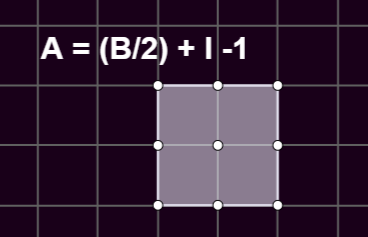
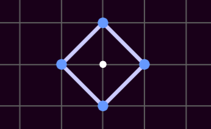
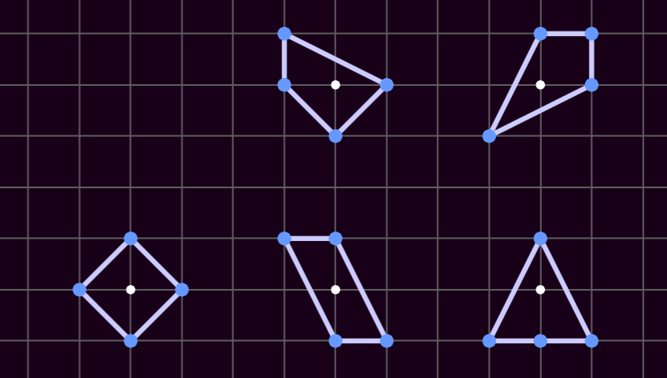
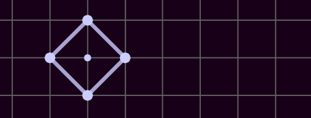
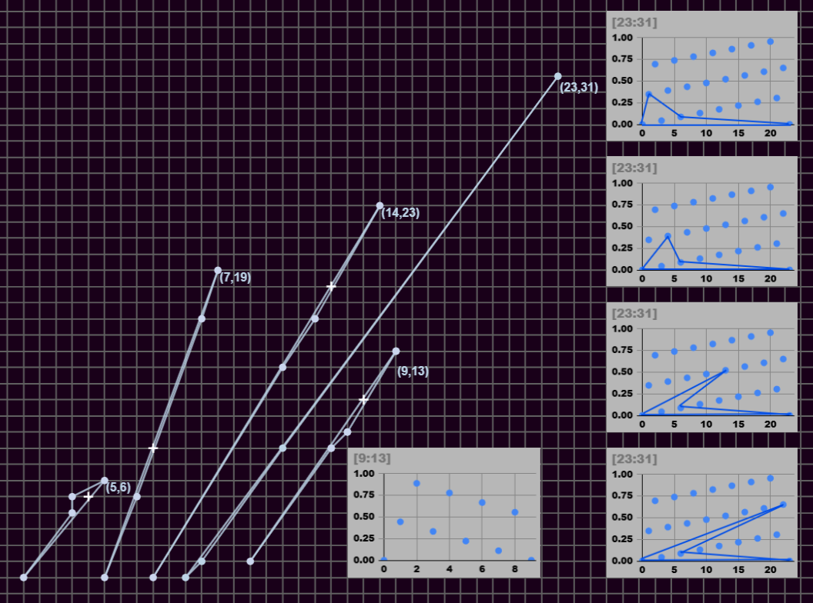

Lattice Polygons
Figure 1: An example lattice polygon

A sample of a lattice polygon. The formula is called "Pick's Theorem" and in this example B=8, and I=1. This paper is not about Pick's Theorem, but it uses the same rules for counting border points. They do not have to be verticies of the polygon, they can also be points along an edge. For fun notice that A=(8/2)+1-1=4. Try this out on several shapes if you like, but be informed that the rest of this paper will ignore the results of Pick's and do something way simpler.
Figure 2: The Basic [4:1] Lattice Polygon

Now we turn our attention to the attempt to count all of the ways we can make a lattice polygon that has exactly 4 border points, and 1 interior point. This is an image of the first such polygon that comes to mind.
Figure 3: Probably all [4:1] possibilities

When first confronted with this thought, I sketched out these five figures and thought there were a few more maybe.
Figure 4: The first couple concave finds

Still using pencil and paper, had little breakthrough and found 2 more examples, which excitingly were concave, and I was fairly sure I had found the majority of the possibilities.
Figure 5: Oops they are infinite

This should have been obvious from the start, but the vertices can be shifted carefully along a line and still conform to the [4:1] rule
Figure 6: Some have to skip vertices

What was less obvious was that demonstrations of how 'flexible' the shapes can be varied greatly. For example the basic triangle, the simplest [4:1] shape with an edge border, and which itself is a carefully flexed diamond, show the behavior that flexing the peak requires moving the interior point. Also notice that the peak has to jump 2 every time so the interior point can jump one.
Figure 7: Some have options but are bounded

The style of how to get these across keeps changing, because I like drawing them and some look better static. In these two versions of the same idea, you start with three points and then figure out where the fourth has to be. If it's hard to tell each show 5 solutions that are [4:1] shapes, two green on the concave side of the starting three, and three purple on the convex side. The little + shows the interior point. Notice that continuing along the line won't get you another solution.
Figure 8: Pick the simplest three non-collinear starting points

This figure pushes the boudary of what can be show legibly by having overlapping colored polygons, but notice:
- This is as simple as three non-collinear points can get (the little pink backward capital L in the middle)
- There are three different sets of solutions
- green on the concave side of the L
- blue symmetrically using either side of the L
- purple on the convex side and which has only three solutions
- Unlike in Figure 7, there are infinitely many solutions (at least for two of the solution sets)
- I didn't bother marking the interior points in this figure
Figure 9: Another attempt to show solutions

The same idea of having three starting points as before, but solutions mapped on a line laying parallel to two of the starting points. No attempt to draw all of the polygons. Note the one with the verticle line is just the starter pack diamond with the flexibility shown in the animated Figure 5.
Figure 10: What if we only had 2 starting points

This is a conjecture, but it seems likely that you can make a [4:1] starting with any segment that has an edge that is x,y if x and y are relatively prime. So the side touches only two lattice points. The graphs show 4 ways to solve for 23,31. The points on the graph represent the next integer up from the initial line. I don't have an algorithmic way to solve but it works for the 5 shapes shown. Try the 9,13 for yourself, graph provided.
Figure 11: Bonus figure - a picture of some [3:1] shapes
![a double wedge shape of som [3:1] lattice polygons](images/LatticePolygons/many_3_1.png)
My original idea was to plot how many of each combination of B and I existed. For example, [3:5]->0, there are no shapes with 3 borders and 5 interiors. Except there are, and they are just as interesting as the [4:1] stuff. I don't think there are any combinations that aren't either zero or infinitely many solutions. Find some for yourself, it's another rabbit hole. As a parting thought, Figure 11 shows a few [3,1].